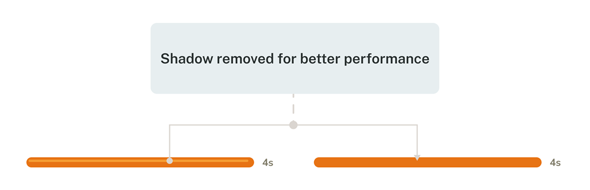

KiddiMath Practice App
Designing a practice experience that shifts student motivation — from a forced routine to a reward-driven journey
A Shift From Forced Learning to Purposeful Play
KiddiMath is a mental math center for children aged 4–12. The center’s practice app helps students reinforce what they’ve learned and build fluency through teacher-guided exercises — before, during, or after class.
To make the app more effective, I focused on students it wasn’t fully supporting — like those falling behind or needing extra time to finish a course. I wanted to shift how they approached practice: from something they were told to do, to something they were motivated to complete. Linking practice actions to visible goals became the core design focus that drove this transformation.
view prototypeOct 2024 – Aug 2025 (11 months)
UX/UI Designer
-
what i accomplished
- Restructured formula content for better learning flow , making it easier for students to follow and build skills progressively.
- Simplified the UI and introduced a more playful design, creating a foundation for consistent visual updates across future KiddiMath products.
- Created a reward system that connects practice progress to badges and rankings, shifting students’ mindset from completing exercises out of obligation to working toward clear, motivating goals.
How I approached the design
01
and define
A Quick Note
To keep things clear and easy to follow, I simplified a few real-life details. The core ideas and design mindset, however, remain unchanged.
course structure
At KiddiMath, the learning path is organized into main levels, each containing smaller sub-levels. Students don’t all start from the same place — they take a placement test and begin at the sub-level that matches their ability. Once they complete a set of sub-levels, they’re considered to have finished the main level that contains them.
Practice Flow
Each sub-level at KiddiMath lasts three months and includes three key learning touchpoints. Students start by learning new formulas through textbook-based exercises to build a foundation. Then, teachers provide extra paper worksheets to reinforce accuracy. Finally, students practice on the app, where adjustable timers help improve speed and focus.
Formula Learning Sequence
In each 3-month sub-level, students follow a steady learning flow: they start by practicing small formulas one by one, then move on to a combined formula set that mixes what they’ve just learned. After that, the cycle repeats — more new small formulas, followed by another combined set. It’s a gradual build-up that helps kids get familiar before applying their skills in bigger, more complex problems.
Practice Coverage Map
As introduced earlier, each sub-level includes three main touchpoints where students practice: the textbook, extra paper worksheets, and the app. Together, the textbook and worksheets help students cover both small formulas and grouped formulas. However, the app — while more convenient for timed practice — currently only supports the grouped formulas. That means students can’t really use the app to practice right away after learning a small formula, which limits its usefulness early on in the learning cycle.
assumption 01
The app supports learning, but not in sync with it
I assumed the app wasn’t fully optimized to work alongside the student’s real learning flow. In each sub-level, students typically learn small formulas first, then practice a big grouped formula that combines what they’ve just studied. But the app only provided grouped exercises — there were no drills for the smaller parts.
This meant students couldn’t start using the app until they had learned all the formulas in the group, even though they might’ve been ready to practice parts of it earlier.
So I believed the app should be restructured to include smaller formulas alongside the big grouped ones — making it easier to use during the actual learning process, not just after it.
assumption 02
More content isn’t enough - it also needs motivation.
When we added small-step formulas into the app, it technically filled a gap: now students could review both individual and grouped concepts digitally, not just on paper. From the center’s perspective, that meant the app was more complete — a better teaching tool.
But from the student’s perspective, it didn’t change much. I had seen this firsthand as a former teacher: even when we replaced paper homework with app-based drills, many kids still skipped it. To them, it was still just “more homework.” They were already doing so much at school — this didn’t feel different.
That’s why I realized simply adding content wasn’t enough. I needed to find a way to make students want to practice — not just feel like they had to. Connecting practice to visible, motivating rewards was key to that shift.
user interview
Based on my teaching experience and analysis of the learning context, I formed initial assumptions and then tested them through interviews with two key groups: teachers and struggling students (those finishing late or scoring lower on tests). The aim was to validate my assumptions and uncover further insights. With support from the academic staff, I conducted flexible, in-class interviews using guiding questions while allowing conversations to flow naturally.
insight 01
Adding single-formula practice helps teachers teach more efficiently
Based on my first assumption, I proposed breaking formulas into single units to highlight how the old app didn’t support early-stage practice for students. I shared this with the teachers to see if the problem resonated with them — and they agreed it made sense..
They felt the new structure gave them more flexibility in class. It became a second tool alongside paper exercises, helping students train their speed and accuracy right from the start, without teachers having to prepare extra materials on their own.
insight 02
Tiny wins added up to big motivation
My second assumption was that adding single-formula drills early on could help — but only if kids actually wanted to use them. I knew more content alone wouldn’t engage them, so I needed to find a way to make it feel rewarding. But I wasn’t sure what that would look like — so I started asking.
From the interviews, I learned two things. First, many students already felt overwhelmed from schoolwork. More drills — even simplified ones — could make them feel worse if they kept getting things wrong. Second, teachers were concerned about turning the app into something too game-like, fearing it would distract kids from real-life classroom activities.
That’s when I reframed the approach: instead of focusing on accuracy, I focused on accumulated progress. One correct answer wasn’t “1 out of 10” — it was a step forward -a small win, getting the student closer to a reward (like a badge or a higher position in the rankings). This new way of framing helped students feel motivated without pressure, while still meeting teachers’ expectations for a non-game-focused app.
insight 03
Too many visible options on the exercise screen
Teachers shared that the main exercise screen — where students spend most of their time — required a bit of explanation the first time, especially for younger kids. I noticed that several less important buttons were given equal visual weight as the essential ones, which may have made the screen feel a bit busy. Simplifying the layout helped reduce friction, making it easier for teachers to guide students — and for kids to use the app more independently.
02
solution
Opportunities
Based on the interview insights, three core opportunities for the redesign emerged: restructuring exercises to include single-formula drills, motivating students through an accumulation mindset with badges and rankings, and streamlining the exercise screen for smoother use.
adding single formulas
To decide how single formulas should be separated from grouped ones, I worked closely with the center owner to finalize the new structure. Once the “single” and “grouped” formulas were defined, I came up with names to make communication easier for the team: practicing a single formula became “planting a tree,” and completing a grouped exercise — which includes all those single formulas — became “harvesting.” This playful analogy made it easier for everyone to visualize the learning flow and refer to it consistently during the redesign.
Badge System
Grouped formulas are shown as progress buttons (e.g., 2/99). Students collect 99 correct answers to unlock a themed vegetable badge. Until then, the badge stays locked with a ‘?’ icon, and once completed, the full illustration is revealed along with a badge icon on the formula button — marking it as harvested.
Leaderboard
In addition, all correct answers collected from grouped formulas are accumulated to rank students on the leaderboard alongside their peers.
Progress Feedback
During practice, students will see progress modals showing the number of correct answers accumulated so far, making it easy to track their progress. There are 4 themed designs matching the center’s 4 levels. When a badge is earned, a special black-background modal appears to celebrate the achievement.
Journey of Mindset Change
To make it easier to visualize, I created a short storyboard showing how students experience their results before and after the reward system was introduced. It highlights the shift in motivation — from feeling pressured by the number of mistakes to feeling excited about progressing toward earning their badges.
Previous Practice Screen Issues
While looking for ways to help teachers explain the practice screen more easily to first-time students, I noticed several areas that could be optimized — reducing less important elements and highlighting key features. These improvements would make the screen more effective and easier to use. The main issues are outlined below.
Simplifying Layout & Buttons
Based on the issues identified, here’s the redesigned practice screen with a cleaner layout and clearer button functions.
Highlighting the “Try” Step
To make the “Try” step more noticeable, I updated the flow so that when a student starts a session, a confirmation modal appears asking whether they want to Try or Practice. Choosing Try gives 1 question to get familiar with the format, while Practice follows the number of questions they’ve set.
other hightlights
Quick Result Sharing
When kids finish an exercise, parents often need to show the results to teachers. Instead of taking unclear screenshots, this feature allows parents to capture and share the results quickly with just one button.
4 Theme Colors Aligned with 4 Levels
The center had already assigned a unique color to each learning level, but the app didn’t reflect this distinction. In the redesign, I matched the app’s visuals to the 4 existing levels with their own theme colors, making the structure clearer and more consistent.
Earn Stars to Unlock Progress
Each practice formula is built from three factors — Digit (D), Row (R), and Time (S) — with stars assigned to each. Kids need to adjust the difficulty so that all required stars light up. Only then will their correct answers count toward badges and rankings. This not only motivates them through rewards but also ensures they’re practicing at the minimum difficulty set by the center.
Listening Mode for Practice
Previously, exercises were only displayed on screen. With the new listening feature, students can hear the questions read out and solve them in real time, creating a different way to practice that sharpens focus and mental math skills.
03
typography
Since the app is designed for kids, I wanted a typeface that feels approachable and friendly. Therefore, I chose Nunito for its rounded edges and soft curves, which make the interface more welcoming.

color
The four accent colors were kept from the center’s original level system. I also defined a set of neutral colors corresponding to each theme..
mascot inspiration
The mascot was created by taking inspiration from a child’s hand holding a soroban, blending it with the soroban bead shape, and shaping it into a friendly character.
04
system
button components
I used component properties to manage button elements and applied variables to switch color themes.
other components

05
design
06
Post-Dev Review
To support UI testing after development, I used a responsive view plugin to quickly check layouts across different screens. Issues were consolidated and documented in Notion, making post-code revisions more efficient.
07
steps
Next step 1
Essential Role of Teacher & Center Support
Badges and ranking are already built into the app, but they will not be 100% effective on their own. Without teachers introducing and explaining these features, children may not fully understand or pay attention to them. Teachers play a key role in helping students see the value of these rewards from the start. In addition, the center can strengthen engagement by linking badges and ranking with offline activities, offering extra gifts or recognition. This way, the app is not the only driver—it works best when supported by teachers and the center to truly spark children’s curiosity and motivation.
Next step 2
Right Formulas, Better Progress
At the same time, although making mistakes may not heavily affect a child’s psychology in the short term, repeated errors still indicate a lack of progress and practicing formulas beyond their current ability. To make practice on the app more effective, teachers should be involved in guiding students toward the right formulas—helping them not only collect correct answers comfortably but also truly improve their math skills.
Next step 3
Badges and Streaks as Performance Indicators
Previously, students were considered ready for mid-term or final exams once they had completed the paper-based curriculum and practiced all formulas. With the app, the center can now add new evaluation metrics: the number of badges collected and the consistency of daily practice (streaks).
If these numbers meet the expectations set by the center, they become strong indicators that a student is ready to take the exam. This provides the center with an additional, data-driven way to measure learning outcomes and ensure students meet the required standards.
Learning 1
From Design to Product: A Longer Path Than Expected
Turning a design into a working product is not just about coding the UI—it also requires testing features, validating performance, and ensuring that the original set of math formulas are implemented correctly. All of this takes considerable time..
Because I didn’t fully understand this process, the center and I kept sending new formulas to be coded, even though the original formulas, features, performance, and UI fixes were not yet completed. This created unnecessary workload for the developer and caused significant delays.
The key learning is that understanding the development workflow is crucial. It allows me to prioritize correctly, avoid overloading developers too early, and strike a better balance between the center’s requests and the actual development timeline.
Learning 2
Balancing Design Ideas with Performance
I realized that not every design detail in Figma can or should be implemented directly in code. While it’s easy to design freely, performance must also be considered to ensure the app runs smoothly. For example, I initially added a shadowed countdown bar in the exercise screen. However, this design was later removed during development because they caused performance issues like lagging. This taught me the importance of balancing creativity with feasibility right from the design stage.
